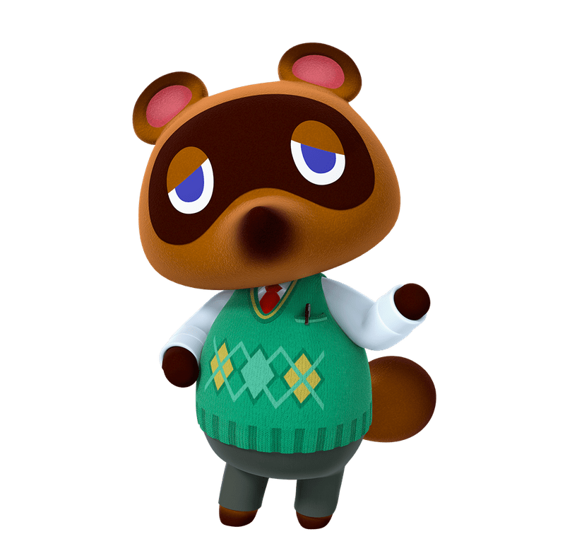

about animal crossing: new horizons

Animal Crossing: New Horizons[a] is a 2020 life simulation game developed and published by Nintendo for the Nintendo Switch. It is the fifth main Animal Crossing game and was released on March 20, 2020.
In New Horizons, the player controls a customizable character who moves to a deserted island after purchasing a package from Tom Nook, a tanuki character who has appeared in every entry in the Animal Crossing series. Taking place in real time, the player can explore the island in a nonlinear fashion, gathering and crafting items, catching insects and fish, and developing the island into a community of anthropomorphic animals.
New Horizons was a major commercial success, breaking the console game record for most digital units sold in a single month with five million copies, and has currently sold over 26 million copies. Currently standing as the 28th best-selling video game in history, it became the best-selling game in the Animal Crossing series, the best-selling Nintendo Switch exclusive, the second best-selling game on the Nintendo Switch (after Mario Kart 8 Deluxe), and the second-highest selling game of all time in Japan (after the original three Pokémon games); its success has been partially attributed to its release during the COVID-19 pandemic, with players spending a lot more time at home.
| main villagers | name | role on island |
|---|---|---|
|  | tom nook | Tom Nook (たぬきち Tanukichi, a Tanuki) is a character who plays the most important role in all of the games. In all games leading to New Leaf, he is the manager of the town shop. |
| timmy and tommy nook | Timothy (better known as Timmy) (まめきち, Mamekichi) and Thomas (more often known as Tommy) (つぶきち, Tsubukichi) are the twin apprentices of Tom Nook, the tanuki who runs the town's store. | |
 |
isabelle | Isabelle (しずえ Shizue?) is a dog who assists the player in their new role as the town mayor as their secretary and assistant. |